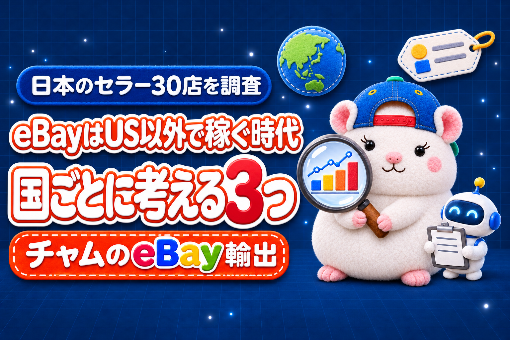

eBayで稼ぐ場所は、米国からUS以外に移りました。
関税のあと、米国は売れても利益が出にくくなりました。
利益が出るのは、関税をバイヤーが払うUS以外です。
ところが、US以外の出品を「米国のおまけ」として扱っているストアが、ほとんどです。
日本のセラー30店を調べると、各国のサイトに出しているストアの多くが、米国の値段に一律の%を掛けただけでした。
US以外で稼ぐための考え方は、シンプルです。
イギリスも、ドイツも、オーストラリアも、国ごとに「1つのストア」として考える。
結論から書くと、ポイントは3つです。
- 国ごとに、1つのストアとして考える
- 値段は、国ごとに競合とくらべて決める
- 国ごとに出し直さず、無料で出してから整える
この記事を書いた人

この記事は、梱包以外をAIに任せて、初月から利益10万4,286円を出したチャムが書いています。
日本のセラー30店の、US以外の出品を調べました。
なぜ、US以外で稼ぐ時代なのか
米国に売るときは、関税をこちらが払います。
米国のバイヤーは、関税があっても買ってくれます。
でも、その関税が、1件ごとに利益から引かれます。
US以外は、関税をバイヤーが払います。
同じ商品でも、利益が出ます。
例えば、うちのストアでは、注文のうちUS以外の割合が、7月の約25%から、10〜11月は約半分になりました。
前の記事で、すぐやるポイントをまとめています。

日本のセラー30店を調べると
では、ほかのストアは、US以外をどう出しているのか。
日本から出品しているセラー30店を調べました。
| 調べたこと(英国のサイト) | 結果 |
|---|---|
| 英国のサイトに出品があるストア | 29店中15店 |
| そのうち、値段が米国の値段×一律の% | 15店中13店 |
| そのうち、英国の出品のほうが届く日が遅い | 15店中10店 |
| 調べ方 | 中身 |
|---|---|
| 対象 | 受賞セラー5店+いろいろなジャンルの日本のセラー25店 |
| 見たもの | 英国のサイトの出品の値段と届く日(1店6件まで) |
| 時期 | 2026年11月 |
| 道具 | eBayの公式API |
各国のサイトに出しているストアの多くは、米国の値段を、そのまま写しているだけでした。
届く日も、米国の出品より遅く見えています。
そもそも、各国のサイトに出していないストアも、約半分ありました。
国ごとに考える3つのポイント
1. 国ごとに、1つのストアとして考える
米国の出品を、ほかの国にも写しておく。
多くの人が、この考え方です。
でも、主戦場がUS以外なら、逆です。
イギリスも、ドイツも、オーストラリアも、それぞれ1つのストアとして考えます。
値段も、配送も、広告も、オファーも、その国に合わせる。
米国でやっていることを、国ごとにやるだけです。
2. 値段は、国ごとに競合とくらべて決める
値付けの基本は、どの国でも同じです。
同じ商品の競合とくらべて、利益が出る中でいちばん安くする。
米国の値段は、関税をこちらが払うぶん、高めになりがちです。
それを写すと、US以外では高すぎることがあります。
US以外は関税がかからないので、利益が出る下限も低くなります。
だから、US以外のほうが、いちばん安くしやすいです。
3. 国ごとに出し直さず、無料で出してから整える
各国のサイトに、全部を自分で出品し直す必要はありません。
自分で出すと、国ごとに出品料がかかります。
出品が数千件あれば、7か国ぶんで大きな額になります。
eBaymagで出した出品なら、出品料はかかりません。
だから、eBaymagで無料で出して、そのあと国ごとに整えるのが、いちばん得です。
まとめ
関税のあと、eBayはUS以外で稼ぐ時代になりました。
でも、US以外の出品は、米国の値段のままのストアがほとんどでした。
国ごとに考えるポイントは、3つです。
- 国ごとに、1つのストアとして考える
- 値段は、国ごとに競合とくらべて決める
- 国ごとに出し直さず、無料で出してから整える
まずは、あなたのストアの英国のサイトの出品を、1つ開いてみてください。
値段は、米国の値段の写しのままになっていませんか?🐹
▼中の人🏠(レンタルスペース23部屋・売上1.5億)のレンスペ実録

▼ブログ(eBay×レンスペ、全記事まとめ)

▼この店のやり方は、ぜんぶ1冊にまとめてあります
リサーチ・出品・値付け・顧客対応まで、初月利益10万4,286円を出した実店舗の記録と手順を全部書いた教科書です。
読んだその日から、AI社員の作り方をそのまま真似できます。
『AI × eBay輸出の教科書 — 梱包以外、ぜんぶAI』


🎁 2026年10月22日に第3版になりました。顧客対応 完全自動化ツール・ストアドクター・AI自動化コーチなど付録6つは、これまでに買った人も含めて購入者全員に無料で受け取れます。
内容・最新価格は販売ページをご確認ください。